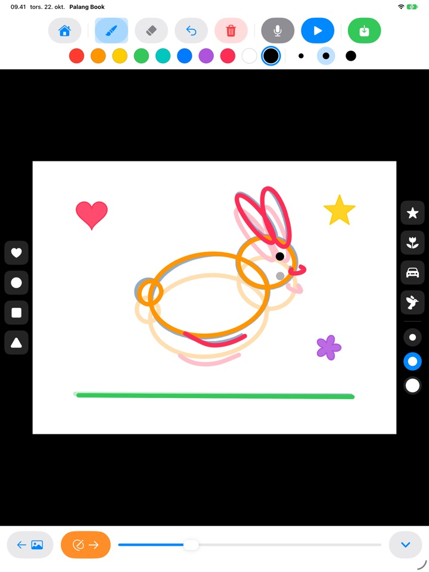
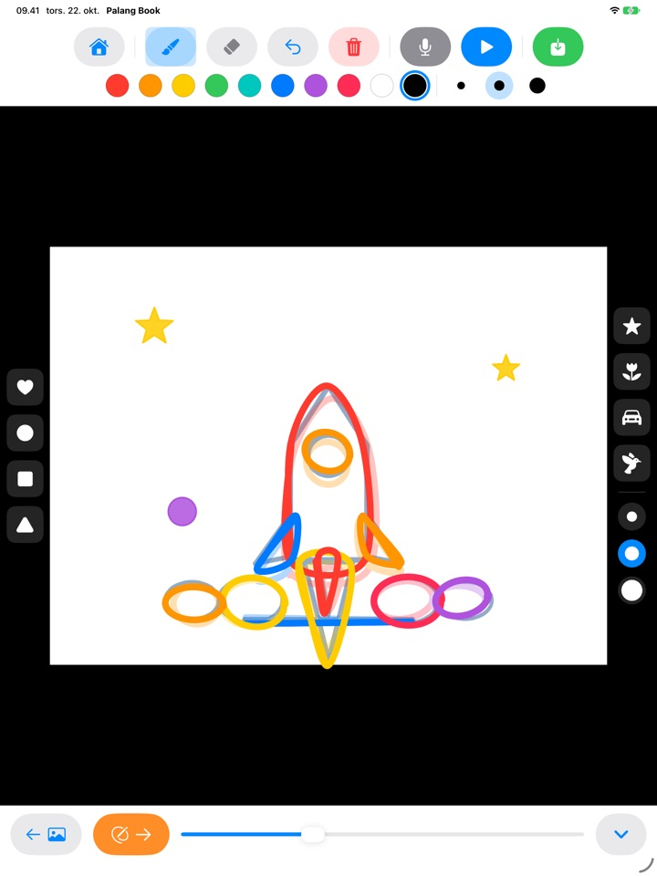
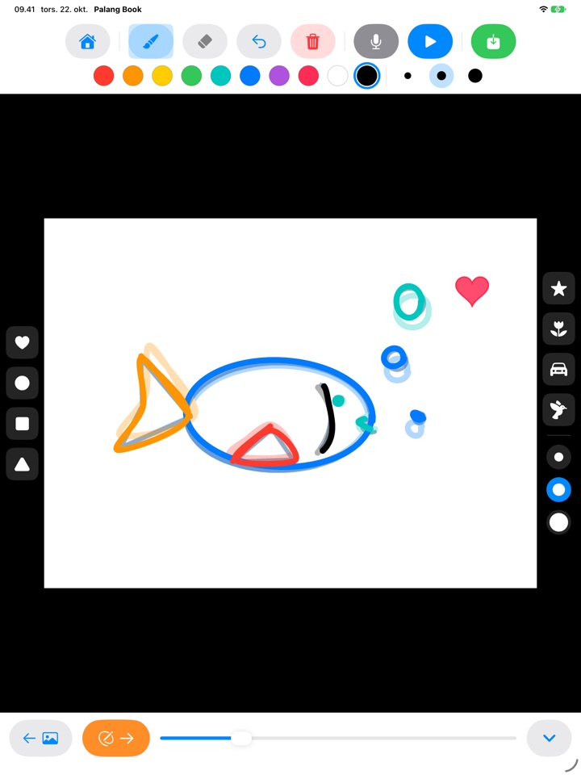
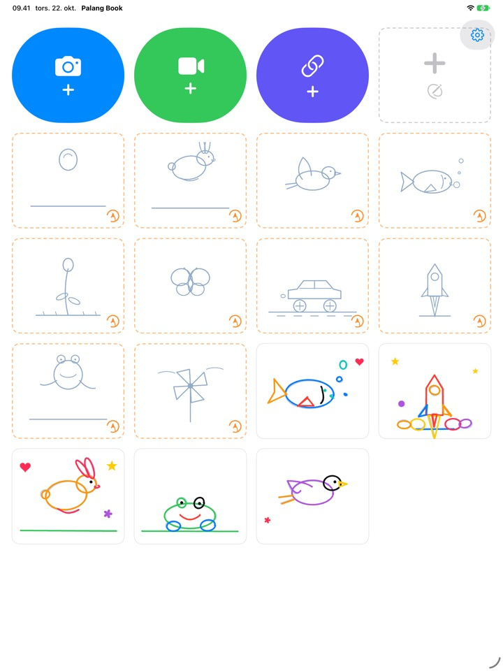

Tegn efter stregen.
Se den bevæge sig.
Barnet tegner efter en lys skabelon, én side ad gangen. Tryk på afspil, så forsvinder skabelonen, og kun barnets egne streger bevæger sig. Alle knapper er billeder, så barnet kan klare det selv, før det kan læse.
Til iPad. Tre tegn efter-sæt er gratis.

Tegn et par sider
Tegn noget, og tryk på den orange pil for at gå til næste side. Siden før skinner svagt igennem. Når du har tegnet to eller tre sider, trykker du på den blå afspil-knap.
Synd at en god tegning bare skal stå stille, ikke?
Animation betyder, at man tegner næsten den samme tegning igen og igen med små ændringer, og alene ved børn ikke, hvor de skal starte. Palang Book lægger en lys skabelon ind, hvor bevægelsen allerede er klar, så barnet bare følger stregen. Så snart der trykkes på afspil, bevæger tegningen sig.
Følg stregen, og du har en animation
En hoppende bold, en springende kanin, en flyvende fugl, en svømmende fisk, en blomst, der springer ud, en sommerfugl, en racerbil, en raket, en frø og en vindmølle. Hvert sæt har omkring 20 skabelonsider.
Forrige side skinner svagt igennem, så den næste er nem at tegne, og ved afspilning forsvinder skabelonen, så kun barnets tegning bevæger sig.

Stempler og ti farver
Tryk hjerter, cirkler, firkanter, trekanter, stjerner, blomster, biler og fugle på siden. Stempler og pensler findes i tre størrelser hver, og der er ti farver at vælge imellem.
Med viskelæder og fortryd er fejl hurtigt rettet. Tegn med fingeren eller Apple Pencil.

Oven på dine egne videoer eller på hvidt papir
Hent en video, du selv har optaget, eller en fra Fotos, og tegn direkte oven på den. Skjuler du baggrunden, afspilles kun de tegnede scener efter hinanden på hvidt papir. Der er også en tom flipbog helt uden skabelon.
Tryk på mikrofonen for at optage barnets stemme til, og gem det færdige værk som video i Fotos, så resten af familien kan se det.

Kom i gang i tre trin
- 1
Tryk på et skabelonkort
Kortene med orange stiplet kant på hjemmeskærmen er tegn efter-sæt.
- 2
Tegn og bladr
Den orange pil fører dig til næste side.
- 3
Tryk på afspil
Tryk på den blå afspil-knap, så bevæger tegningen sig.
Hvad knapperne gør
- Orange stiplet kort
- Start et tegn efter-sæt
- Gråt stiplet kort
- Tom flipbog
- Blåt kamera
- Tegn oven på en video, du optager
- Grøn video
- Hent en video fra Fotos
- Indigo link
- Indsæt et link til en videofil
- Orange pil
- Næste side
- Blå afspil
- Afspil animationen, tryk igen for at stoppe
- Buet pil
- Fortryd den sidste streg
- Rød skraldespand
- Ryd hele siden (fortryd henter den tilbage)
- Mikrofon
- Optag en stemme, mens animationen kører i ring
- Videoikon
- Skjul videobaggrunden (lyserøde striber betyder kun tegninger)
- Grøn gem
- Gem som video i Fotos
Hold fingeren på et værks kort på hjemmeskærmen for at slette det. Tegninger, optagelse og hentet video slettes sammen med det.
Masser at prøve gratis. Livstidsadgang, hvis I er vilde med det.
Gratis
- 3 tegn efter-sæt (bold, kanin, blomst)
- Gem 3 værker
- Hent 1 video
- Tomme flipbøger på op til 10 sider
- Stemmeoptagelse på op til 15 sekunder
- Stempler, farver, pensler og gem i Fotos
Livstidsadgang
- Alle tegn efter-sæt, også dem der kommer
- Ingen grænser for værker, sider, videoer og optagetid
- Intet Palang Book-kort til sidst i gemte videoer
Et engangskøb, ikke et abonnement. Virker med Familiedeling på alle familiens iPads.
Videoer, der gemmes gratis, slutter med et kort Palang Book-kort. Har du brugt Palang Book, før Livstidsadgang fandtes, er alt allerede låst op for dig.
Spørgsmål
Hvordan virker skabelonerne?
De lyseblå streger er skabelonen. Barnet tegner oven på dem, og når du trykker på afspil, forsvinder skabelonen, og kun barnets streger bevæger sig. Efter omkring 20 sider er animationen færdig.
Jeg vil kun afspille og gemme tegningen, uden videoen.
I et videoværk trykker du på videoikonet i værktøjslinjen øverst, så det bliver lyserødt med striber. Så viser både afspilning og lagring kun tegningen på hvid baggrund. Kun de tegnede scener afspilles, så nogle få tegninger oven på et langt klip giver en kort animation.
Hvor ender den færdige video?
Tryk på den grønne gem-knap yderst til højre i værktøjslinjen, så gemmes en mp4-video i Fotos. Giv adgang til fotos, første gang du gemmer.
Hvordan tilføjer jeg en stemme?
Tryk på mikrofonknappen for at optage, mens animationen kører i ring, og tryk på stop for at afslutte. Optager du igen, erstattes den gamle optagelse. Stemmen kommer med, når du gemmer videoen.
Et videolink vil ikke åbne.
Tjek internetforbindelsen, og sørg for, at adressen peger direkte på en videofil (der ender på .mp4 eller lignende). Links til sider på videodelingstjenester kan ikke åbnes. Brug videoer, du selv har lavet, eller som er frie at bruge.
Min håndflade bliver ved med at sætte mærker.
Den buede pil fjerner den sidste streg, og den røde skraldespand rydder hele siden (fortryd henter den tilbage). Sker det tit, så skriv til os, så hjælper vi.
Hvorfor kommer der et regnestykke før købsskærmen?
Så børn ikke selv kan komme ind på købsskærmen. Når et barn trykker på noget låst, vises en stor hængelås med teksten „Vis det her til en voksen“, og købsskærmen åbner først, når en voksen har løst et gangestykke.
Hvordan gendanner jeg mit køb?
Tryk på tandhjulet øverst til højre på hjemmeskærmen, vælg Livstidsadgang, svar på voksenspørgsmålet, og tryk på Gendan køb. Du skal være logget ind med den samme Apple-konto, som du købte med.
Hvordan sender jeg feedback fra appen?
Tryk på tandhjulet på hjemmeskærmen, og vælg Send feedback. Du kan vedhæfte et skærmbillede og skrive navn og e-mail, hvis du gerne vil have svar. Vi beder om, at det er en forælder, der sender feedback.
Indsamler I oplysninger om mit barn?
Nej. Palang Book indsamler ingen personoplysninger, og tegninger og optagelser bliver på din iPad. Læs mere i privatlivspolitikken.
Spørgsmål eller problemer? Skriv til mizzking75@gmail.com. Vi svarer som regel inden for 2 til 3 dage.